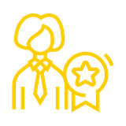
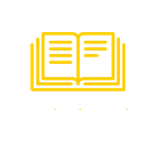
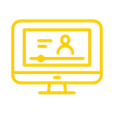
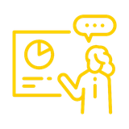
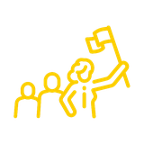
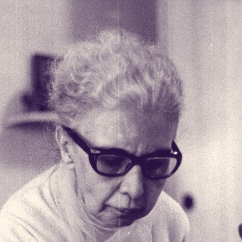
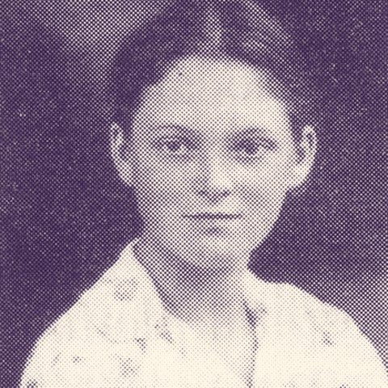

Uma história de inovação e inclusão na ciência brasileira

Tudo começou com um sonho: visibilizar as mulheres que fazem ciência

Histórias invisibilizadas moldaram a ciência moderna

O Brasil reage: celebrando mulheres na inovação

02 a 04 de dezembro: uma semana inteira de ciência

Até que chegou a hora de reunir tudo: SNCT 2026
As mulheres são protagonistas na produção de conhecimento científico. Historicamente invisibilizadas, suas contribuições moldaram a ciência moderna. A SNCT 2026 celebra suas trajetórias, inspira novas gerações e reafirma nosso compromisso com a inclusão, equidade e superação das desigualdades estruturais.
É tempo de contar histórias diferentes
Histórias de mulheres que transformam a ciência
Mulheres que Fazem Ciência
Conheça as trajetórias de cientistas que inspiram novas gerações no Brasil e no mundo.

Nise da Silveira
1905 – 1999
Psiquiatria
Médica psiquiatra que revolucionou o tratamento da saúde mental no país, substituindo métodos agressivos por terapia ocupacional, arte e afeto.
Jaqueline Goes de Jesus
1989 – presente
Biomedicina & Genômica
Biomédica que liderou a equipe responsável pelo sequenciamento do genoma do vírus SARS-CoV-2 (COVID-19) no Brasil em tempo recorde.
Mayana Zatz
1947 – presente
Genética
Geneticista e professora da USP, referência mundial em pesquisas sobre doenças neuromusculares e distrofias musculares.
Enedina Alves Marques
1913 – 1981
Engenharia Civil
Primeira mulher negra a se formar em engenharia civil no Brasil (pela UFPR em 1945), com grande atuação em obras de infraestrutura no Paraná.

Sonja Ashauer
1923 – 1948
Física
Primeira mulher brasileira a concluir doutorado em física, pela Universidade de Cambridge, na Inglaterra, sob orientação do Nobel Paul Dirac.
Melania Amorim
Atuante
Ginecologia & Obstetrícia
Médica pela UFPB e doutora em Tocoginecologia pela Unicamp, referência em saúde materno-infantil, parto humanizado e direitos sexuais e reprodutivos.
A SNCT é mais que um evento sobre ciência, é uma experiência de celebração. Conheça histórias reais, inspiradoras e transformadoras de mulheres que revolucionam a ciência brasileira.
Inovadora, corajosa — amo como o evento valoriza histórias reais de mulheres cientistas.
Adorei conhecer cientistas brasileiras que estão transformando o mundo.
Super inspirador, muito bem organizado e com palestras de excelência.
Excelente espaço para visibilizar a ciência feita por mulheres no Brasil.
Descubra histórias inspiradoras
Conheça trajetórias de mulheres cientistas que rompem barreiras e transformam a ciência brasileira.
Participar de palestras e workshops
Palestras inspiradoras, oficinas hands-on e diálogos diretos com mulheres líderes em ciência e inovação.
Construir redes de colaboração
Encontre mentoras, parceiras de pesquisa e construa conexões que transformarão sua carreira científica.
02 a 04 de dezembro de 2026
Campus Alagoinhas, IF Baiano. Confira as atividades de cada dia, por turno.
| Dia | Manhã | Tarde | Noite |
|---|---|---|---|
| Quarta-feira02 de dezembro | Solenidade de abertura (diurno)Mesa-redonda ou palestra | Festival de Teatro e DançaApresentação de trabalhos | Solenidade de abertura (noturno) |
| Quinta-feira03 de dezembro | Oficinas | Festival de Teatro e DançaApresentação de trabalhos | Oficinas |
| Sexta-feira04 de dezembro | OficinasCerimônia de encerramento (diurno) | Sem atividade | Cerimônia de encerramento (noturno) |
- Solenidades e cerimônias
- Mesa-redonda ou palestra
- Teatro e dança
- Apresentação de trabalhos
- Oficinas